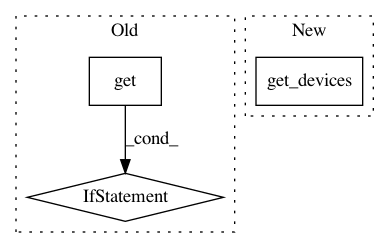

33c906c20aa8ad62f19c974001ffa906759577f2,homeassistant/components/binary_sensor/abode.py,,setup_platform,#Any#Any#Any#Any#,24
Before Change
def setup_platform(hass, config, add_devices, discovery_info=None):
Set up a sensor for an Abode device.
data = hass.data.get(DATA_ABODE)
sensors = []
for sensor in data.devices:
_LOGGER.debug("Sensor type %s", sensor.type)
if sensor.type in ["Door Contact", "Motion Camera"]:
sensors.append(AbodeBinarySensor(hass, data, sensor))
_LOGGER.debug("Adding %d sensors", len(sensors))
add_devices(sensors)
After Change
device_types = map_abode_device_class().keys()
sensors = []
for sensor in abode.get_devices(type_filter=device_types):
sensors.append(AbodeBinarySensor(abode, sensor))
add_devices(sensors)
In pattern: SUPERPATTERN
Frequency: 3
Non-data size: 3
Instances
Project Name: home-assistant/home-assistant
Commit Name: 33c906c20aa8ad62f19c974001ffa906759577f2
Time: 2017-08-29
Author: 1091741+MisterWil@users.noreply.github.com
File Name: homeassistant/components/binary_sensor/abode.py
Class Name:
Method Name: setup_platform
Project Name: home-assistant/home-assistant
Commit Name: ce9de1b7d235f218fe21549609121af38bcb40c6
Time: 2015-01-19
Author: grompf@gmail.com
File Name: homeassistant/external/wink/pywink.py
Class Name:
Method Name: get_switches
Project Name: home-assistant/home-assistant
Commit Name: ce9de1b7d235f218fe21549609121af38bcb40c6
Time: 2015-01-19
Author: grompf@gmail.com
File Name: homeassistant/external/wink/pywink.py
Class Name:
Method Name: get_bulbs